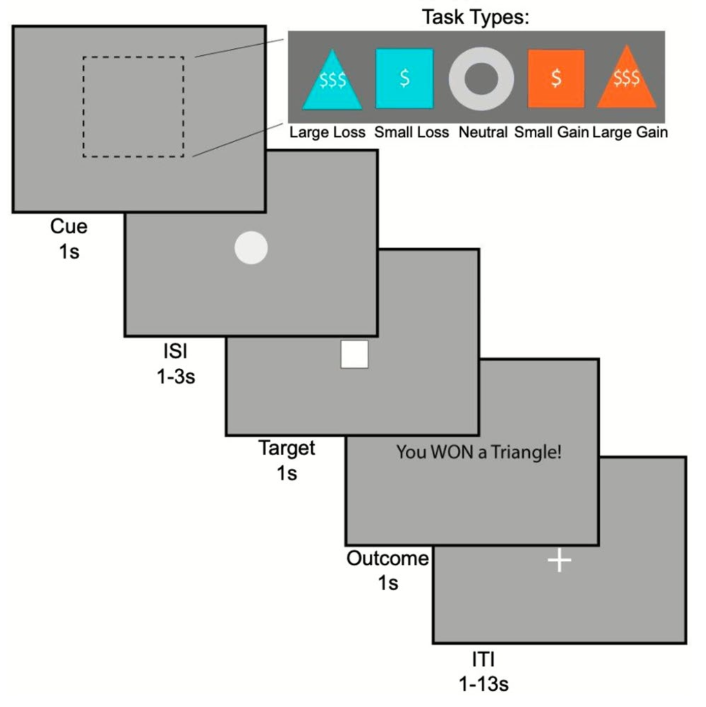
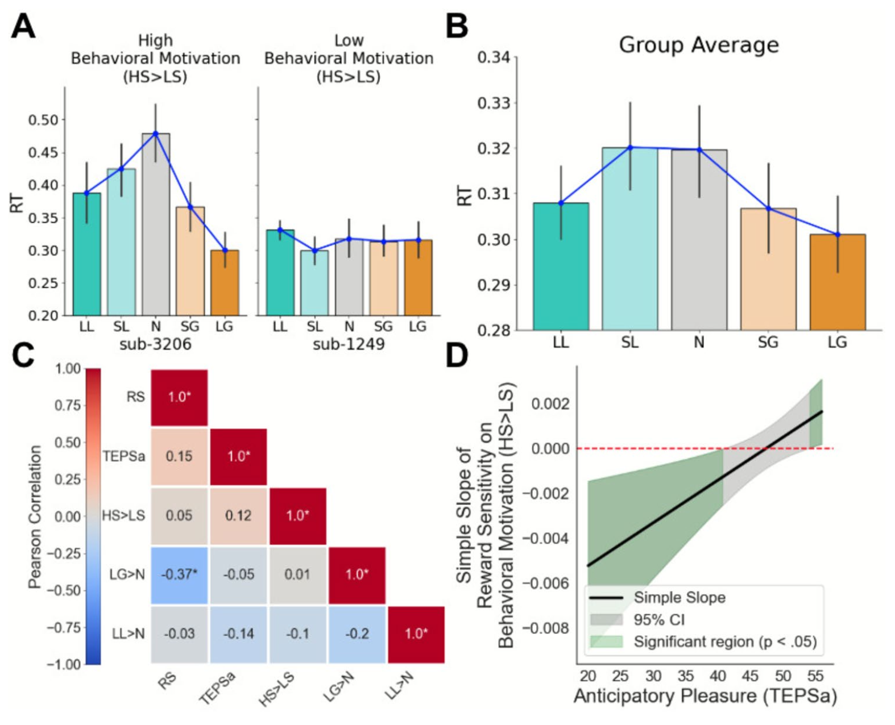
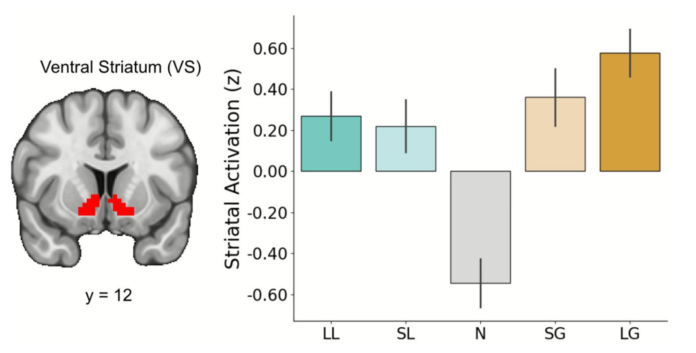
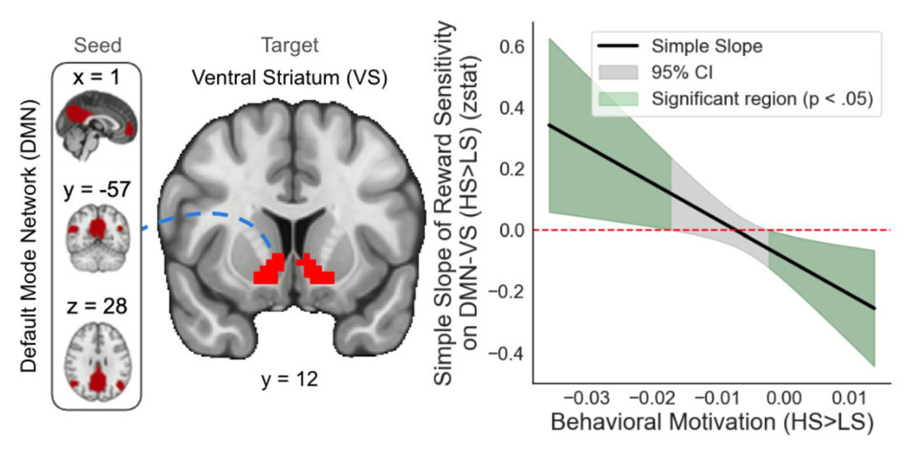

Trait reward sensitivity and behavioral motivation are associated with connectivity between the default mode network and the striatum during reward anticipation
Abstract
Reward sensitivity is a trait-level individual difference associated with both adaptive and maladaptive outcomes. While prior work has linked reward sensitivity to activation in the ventral striatum (VS) during reward tasks, less is known about how reward sensitivity relates to functional connectivity between the VS and the default mode network (DMN) during reward anticipation. Here, we investigated whether reward sensitivity and behavioral motivation—defined as sensitivity to task contingencies—are associated with VS-DMN connectivity during reward anticipation. Participants (N=44) completed a monetary incentive delay task during fMRI. We found that behavioral motivation moderated the relationship between reward sensitivity and VS-DMN connectivity: among highly motivated individuals, greater reward sensitivity was associated with enhanced VS-DMN coupling during anticipation, whereas among less motivated individuals, this relationship reversed. This pattern held across gain and loss anticipation contexts. These findings suggest that motivational state determines when reward sensitivity enhances or reduces corticostriatal connectivity, with implications for understanding reward-related psychopathology.
Figures



